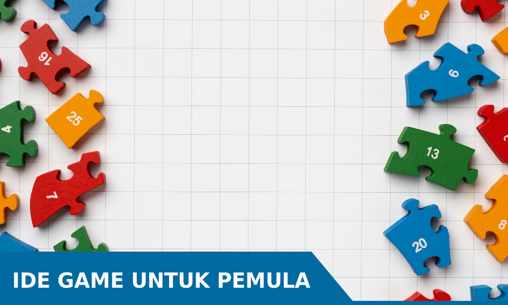
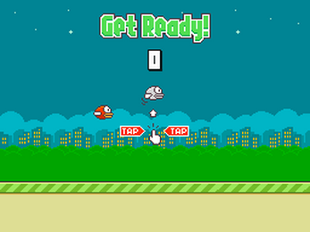
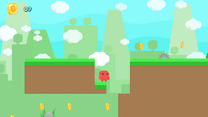
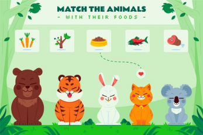

Rekomendasi ide game sederhana untuk pemula 
Masih bingung tentang bagaimana memulai perjalananmu dalam pembuatan game? Jangan khawatir, kita semua pernah berada di titik tersebut. Yang paling penting adalah menemukan arah yang tepat untuk memulai. Untuk pemula, saya sangat merekomendasikan untuk memulai dengan proyek yang sederhana dan memiliki kompleksitas yang rendah. Mengapa? Karena membangun game dengan tingkat kompleksitas yang tinggi memerlukan pemahaman yang lebih mendalam, serta waktu dan energi yang cukup.
Jangan terlalu ambisius di awal. Memulai dengan proyek yang sederhana akan membantu kamu memahami dasar-dasar pembuatan game tanpa merasa terlalu ditekan oleh masalah teknis yang rumit. Menghadapi bug atau kesalahan mungkin saja terjadi, tetapi dengan memulai dari yang sederhana, kamu dapat memperkecil kemungkinan itu dan tetap mempertahankan semangatmu dalam belajar.
Beruntungnya, ada banyak game sederhana yang dapat menjadi proyek pertamamu dalam membangun keterampilan logika dasar dan pemahaman tentang pengembangan game. Inilah beberapa ide game yang kami siapkan untukmu.
Rekomendasi game sederhana untuk pemula
1. Flappy Bird 
Flappy Bird adalah game yang sangat populer pada masanya. Ini sangat cocok sebagai proyek pertama kamu dalam pengembangan game. Proyek ini akan membantu kamu mempelajari fisika dasar, animasi, dan input pada sebuah game.
2. Game Tebak-Tebakan
Game tebak-tebakan balon pemain akan menebak balon yang memberikan skor berdasarkan jumlah nilai yang dipecahkan. Kamu bisa membuat skor secara acak pada setiap balon. Kamu akan mempelajari bagaimana membuat angka secara acak pada sebuah game.
3. Game Platformer 2D 
Banyak game platformer yang menarik dan desain yang cantik, kamu juga bisa membuat game dengan karaktermu sendiri. Game ini karakter biasanya bisa bergerak kanan kiri dan melompat serta mungkin ada tombol atau input untuk menyerang musuh. Di game ini akan ada banyak yang kamu pelajari mulai dari pembuatan karakter, musuh, pijakan, dan biasanya terdapat koin untuk menaikkan skor.
4. Game Edukasi 
Game edukasi untuk anak-anak bisa berupa pendidikan berhitung, membaca, menulis, dan banyak lagi. Kamu bisa berinovasi dalam pendidikan dengan perantara sebuah game. Ini akan menjadikan game yang kamu buat menjadi sangat bermanfaat. Jangan lupa perhatikan desain visual agar menjadi menarik.
Tak perlu terburu-buru dalam pengembangan game. Mulailah dengan game sederhana ini, dan seiring dengan waktu dan pengalaman, kamu dapat meningkatkan kompleksitas game yang ingin kamu buat.
Allure Game merupakan tempat yang menyediakan beragam konten informatif dan inspiratif seputar teknologi, permainan, serta berbagai pengetahuan umum lainnya. Melalui tutorial, tips, dan wawasan yang disajikan, kami berupaya untuk memberikan pengalaman belajar yang menyenangkan dan bermanfaat bagi pembaca kami. Dari pembaruan terbaru dalam dunia teknologi hingga review game terkini, Allure Game hadir untuk memenuhi kebutuhan informasi dan hiburan Anda.